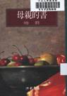
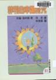

著作目錄
| 書名 | 封面 | 內容 | 出版時間 | 出版社 | 開本/ 頁數 |
|---|---|---|---|---|---|
| 《媽媽銀行》 |  |
散文集 | 1992年9月 | 九歌出版社 初版 | 32開 / 229頁 |
| 2005年5月 | 九歌出版社 二版 | 25開 / 204頁 | |||
| 《小偵探菲利》 |  |
兒童翻譯小說 | 1995年2月 | 九歌出版社 原著 >約翰‧保利斯 | 21x14.9cm / 114頁 |
| 《萬水千山師友情》 | 散文小說合集 | 1995年2月 | 九歌出版社 初版 | 32開 / 234頁 | |
| 2006年6月 | 九歌出版社 紀念珍藏版 | 25開 / 240頁 | |||
| 《母親的書》 |  | 散文集 | 1996年9月 | 洪範書店 | 50開 / 54頁 |
| 《菲利的幸運符咒》 |  | 兒童翻譯小說 | 1997年4月 | 九歌出版社 原著 >約翰‧保利斯 | 25開 / 114頁 |
| 《永是有情人》 | 散文集 | 1998年2月 | 九歌出版社 初版 | 32開 / 220頁 | |
 |
2005年12月 | 九歌出版社 二版 | 25開 / 224頁 | ||
| 《琦君散文 >選(中英對照)》 |  |
散文選 | 2000年6月 | 九歌出版社 譯者 >鮑端磊等 | 25開 / 328頁 |
| 《母親的金手錶》 |  |
散文集 | 2002年1月 | 九歌出版社 | 21.6x15cm / 286頁 |
| 《夢中的餅乾屋》 | 散文集 | 2002年3月 | 九歌出版社 | 21.6x15cm / 283頁 | |
| 《玳瑁髮夾》 |  |
散文集 | 2004年9月 | 格林文化 | 20*20 cm / 72頁 |